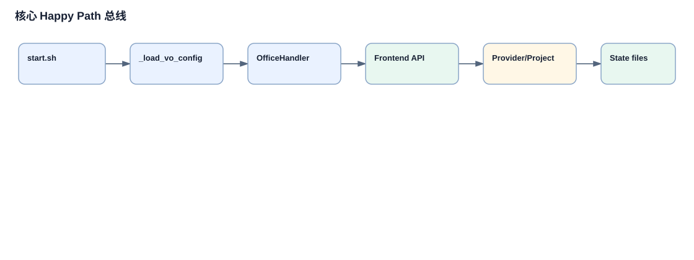

Virtual Office Happy Path 总线
主 Happy Path 是：本地启动 Virtual Office，浏览器打开项目看板，用户启动项目或任务执行，后端创建 attempt，在线程中调用 provider，保存证据，再进入评审、验收、会议阻塞或连续下一任务。
详细主链路说明
`start.sh:start_local`
输入是本地 shell 环境和 `.env`；动作是设置端口、状态目录、gateway URL；输出是可以运行 `app/server.py` 的环境。
`server.py:__main__`
启动后台线程和 HTTP server，presence 在服务启动时绑定 roster 和 snapshot。
`projects.js:ProjectApi`
前端把用户点击转成项目级或任务级 `project-execution/start` 请求。
`OfficeHandler.do_POST`
路由层按路径分发到 `_handle_project_execution_project_start` 或 `_handle_project_execution_start`。
`_handle_project_execution_start`
校验 Project Execution 开关、workspace、executor/reviewer、active task、dirty worktree，并创建 attempt。
`_project_execution_run_attempt`
后台线程构造 prompt，调用 `_project_execution_call_executor`，保存 evidence，并按结果进入 review、done、blocked 或 acceptance。
总线图

图中的关键边均可追溯到 `start.sh`、`app/projects.js`、`app/server.py` 和 `app/provider_execution.py`。
链路清单和筛选
| 链路 | 入口 | 终止点 | 深挖 |
|---|---|---|---|
| 前端项目执行启动 | `projects.js` projectExecutionStart | `_handle_project_execution_start` 返回 started/confirmation/error | 是 |
| Attempt 运行 | `_project_execution_run_attempt` | evidence/stateHistory 持久化 | 是 |
| Provider-neutral 调用 | `_project_execution_call_executor` | 统一 result 返回 attempt | 是 |
| 评审/返工/验收 | `_handle_project_execution_review_start` | done/reworking/blocked | 是 |
| 会议阻塞 | `/meeting-requests` | 恢复执行或 blocked | 是 |
| 项目定时任务派发 | `scheduled-cron` API | 启动项目执行或 skipped | 延伸阅读 |
证据清单
| 结论 | 路径 |
|---|---|
| 项目执行是主业务总线 | `README.md` 项目与任务执行；`app/projects.js:326-352`；`app/server.py:15736-15860` |
| provider 差异被压到 adapter | `app/server.py:15398-15420`；`app/provider_execution.py:28-82` |
| 会议是阻塞分支 | `app/server.py:6362-6497`；`app/server.py:16087` |
关键概念补充
1. Project Execution attempt
出现位置：`app/server.py:15786-15806`。一次任务执行尝试，后续 evidence、review、rework 都挂在 attempt 上。
2. Provider-neutral result
出现位置：`app/provider_execution.py:28-82`。把不同 provider 的 reply、状态、工具、文件变化和人工介入信号整理成统一结构。
3. Meeting request blocker
出现位置：`app/server.py:6362-6497`。当 Agent 认为需要会议才能继续，任务会进入等待会议解决的状态。